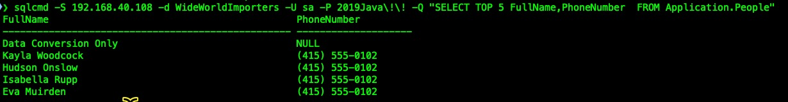

Transitioning Windows Virtual Machine to VKS VM Service
When modernizing an application, we may choose a containerized microservices architecture for tier one and add two but elect to keep the backend database on a traditional virtual machine. This scenario is quite common and is a perfect opportunity to leverage vSphere Kubernetes Services’ VM Service functionality. VM Service enables Kubernetes native provisioning and management for developers deploying hybrid applications hosted on Kubernetes and virtual machines. To deploy VM Service based virtual machines, several cloud images are preconfigured to serve as templates for initial application deployments. In this article, we will introduce a workflow for transitioning an existing VM with a populated database to a template and provision this VM with VM service.
What You Will Learn
In this tutorial, you will learn the basics of how to: Transition from a traditional virtual machine to a template, including sysprep. Deploy VM Service base VM using the created template. Test virtual machine readiness Connect to database services provided by the virtual machine, from Kubernetes
In this tutorial, you will learn the basics of how to:
Transition from a traditional virtual machine to a VM Service template, including sysprep.
Deploy VM Service, purpose-based VM using the created template.
Test virtual machine readiness
Connect to services provided by the virtual machine, from Kubernetes
Before You Start
You should have the following in place:
vSphere 8u3 or later, with content library storage of VM Service templates
Content library assigned to target vSphere namespace
Ovftool installed on workstation
Virtual Machine Transition Workflow
Scenario: The VM to be transitioned is running Microsoft SQL Server 16.0 on Windows 2022. The SQL Server has a sample database, Wide World Importers. Unlike the creation of a general purpose template, we want to preserve much of the server configuration such as the hostname. For this reason, you must create an unattend.xml to customize the sysprep process. With this, once the VM Service template is deploy, it should boot just as the traditional source VM, with workload IP assigned.
Using Sysprep, we will generalize the Windows VM. However, since this is a single-purpose built template, I want to preserve a few Windows server configuration items necessary for core and SQL server functionality, achieved with a custom unattend.xml file.
Check ensure the OVA template has properly imported to the target content library. Use kubectl, with context set to your vSphere namespace, get a listing of available Virtual Machine Images (VirtualMachineImage object abbreviation: vmi). Record the VMI name, as this name will be provided as imageName in the VM Service YAML.
kubectl get vmi
Now create a basic VM Service manifest to deploy a Windows virtual machine. In this scenario, a VM Service providing SQL Server database. For this use case the VM Service manifest will include a readiness probe for port 1433.
Using kubectl, check the status of Windows Virtual Machine and load balancer service.
Test the Microsoft SQL Server database functionality via command line.

What you've learned
In this transition, we successfully converted a traditional virtual machine into a VKS VM Service object with minimal effort. By modifying the Sysprep workflow, we preserved the essential Windows configuration properties needed for hosted applications. This process demonstrates that moving virtual machines to cloud-native management does not necessitate a complete rebuild, making the transition both efficient and seamless.